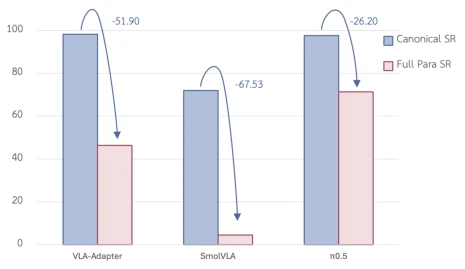
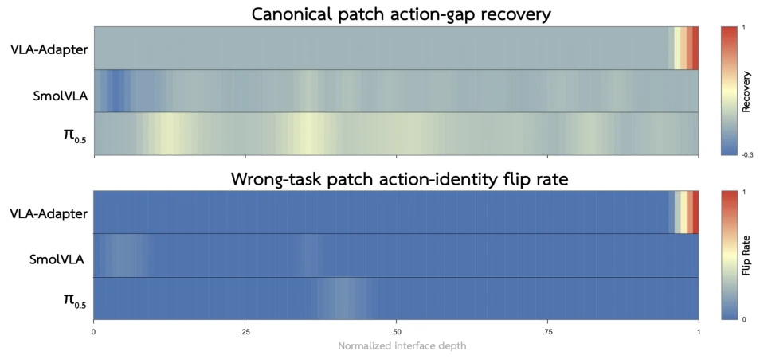
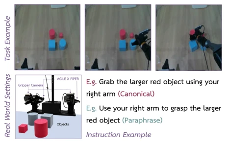
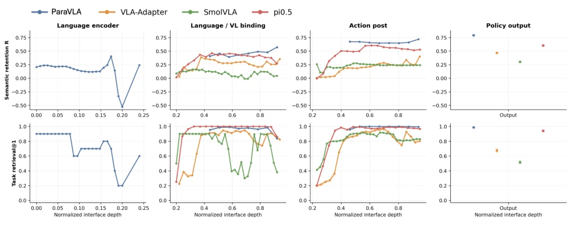
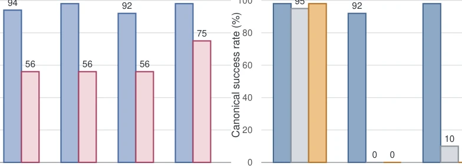

VLA models are like students who have memorized standard answers but fear changed questions; when instructions are paraphrased, they collapse. This is not due to a lack of semantic understanding, but rather feature shift caused by architectural design defects. The industry habitually employs brute-force data augmentation, yet this incurs extremely high costs and low efficiency. Instead of piling up data, the authors performed a surgical intervention, utilizing T5 to extract stable semantics and forcibly re-binding action heads, yielding immediate results. Lightweight models such as VLA-Adapter thereby catch up to large models, and π0.5 also refreshed the PRIDE record. However, although ParaVLA exhibits perfect robustness, it collapses when switching to a larger vision model, leaving scalability unresolved. This work demonstrates that structural optimization is superior to data stacking, yet there remains a gap before achieving general-purpose robots.
Existing VLA models (e.g., VLA-Adapter [46], SmolVLA [42], π0.5 [16]) perform excellently on standard benchmarks, yet under paraphrase tests such as LIBERO-Para [19], success rates plummet by over 60%. The industry typically mitigates this through large-scale data augmentation, but this incurs extremely high costs and low efficiency. Through probe analysis, this paper discovers that the model internally retains task semantics (Retrieval@1 is positive); the failure originates from feature shift introduced by the joint encoding of dynamic vision and text, leading to incorrect mapping of action policies. Existing methods fail to resolve this architectural-level translation failure, urgently requiring a structural repair scheme that does not rely on massive paraphrased data.

Figure 1 Equivalent instruction rewrites cause substantial suc- cess drops although the physical tasks remain unchanged.
We propose Grounded Semantic Re-binding (GSR). Core process: First, utilize a frozen T5 encoder to independently extract task semantics, ensuring semantics are not interfered by current dynamic vision. Second, perform differentiated processing based on the robustness of the model's native language path: inject the neutral prompt "perform the task" for fragile models (e.g., VLA-Adapter) to shield unstable native text, while for robust models (e.g., π0.5), retain native instructions as supplementary signals. Next, project and inject T5 semantics into key multimodal fusion nodes of the model (e.g., Bridge-Attention or VLM prefix), achieving deep interaction between stable semantics and the scene. Finally, the action expert module is trained from scratch initialization, rather than fine-tuning pre-trained weights, to learn the new semantics-to-action mapping. Additionally, we propose ParaVLA as a baseline, adopting a T5+DINOv2 fully decoupled architecture that completely isolates language and vision encoding, fusing only at the action layer, verifying the robustness potential of pure decoupling.
Figure 3 Overview of Grounded Semantic Re-binding.

Figure 4 Layerwise interventions. The top panel shows action recovery after canonical-value replacement, while the bottom shows shifts toward an injected wrong task.
Tested on the LIBERO-Para benchmark (4092 paraphrased instructions), trained only on canonical data. VLA-Adapter success rate improved from 46.82% to 70.94%, SmolVLA from 4.47% to 49.12%. π0.5 reached 70.4 PRIDE score, surpassing Xiaomi-Robotics-0. In real robot experiments, GSR recovered to 40-50% success rate under 0% failure rate. Ablation experiments prove T5 stable semantics is key, not parameter increase; conflict tests show fragile models must block native text. ParaVLA achieves near-perfect paraphrase robustness under 0.33B parameters, but large vision model scalability is limited.

Figure 5 Real-world system and task examples.
其他图片Other Figures

Figure 7 Stage-aligned instruction diagnostics across ParaVLA, VLA-Adapter, SmolVLA, and π0.5. Interfaces are shown in forward order within the language encoder, language/vision–language binding, action-processing, and policy-output stages. The top row reports semantic retention R, which contrasts paraphrase and wrong-task distances; the bottom row reports Retrieval@1. Curves connect interfaces only within the same model and stage, while the isolated points show the final policy outputs. Higher values indicate stronger preservation of task identity.

Figure 8 Language-source factorization for VLA-Adapter on the Goal-100 diagnostic. (a) Capacity controls show that only the frozen-T5 route improves paraphrase success, from 56% to 75%. (b) Removing or corrupting the Qwen–VL or frozen-T5 task source sharply degrades canonical success, while the learned-token control remains largely unchanged.